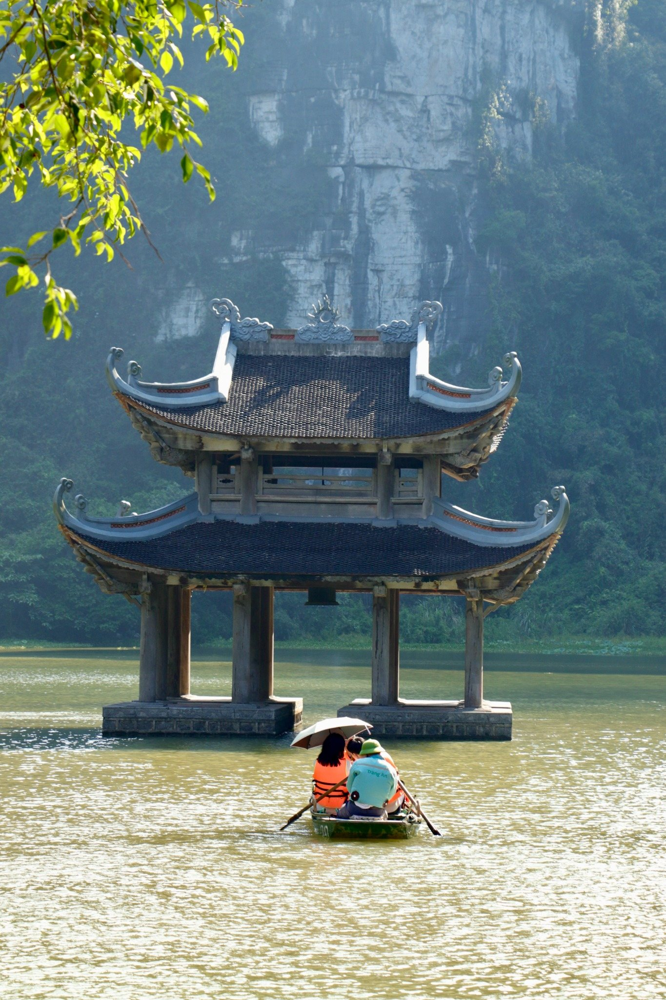
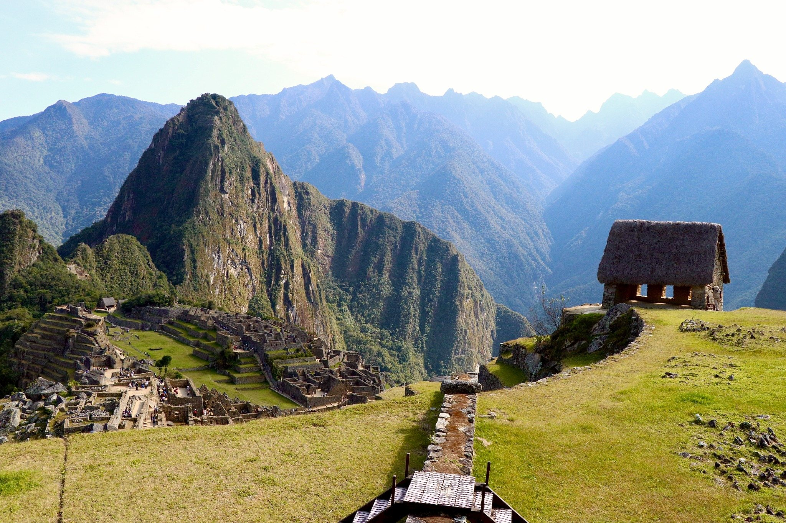
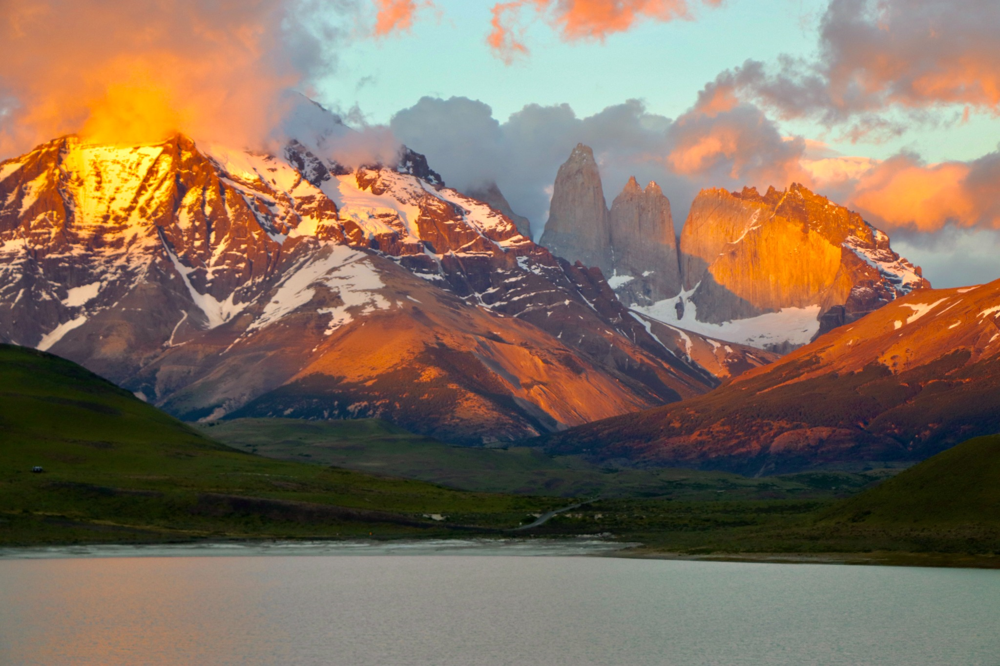

Guide pays
Vietnam
Mon itinéraire, mon budget, les régions parcourues et les conseils que je garderais pour un prochain voyage.
ItinéraireBudgetÉtapesConseils
Découvrir le guide →Conseils & destinations
Ici, je partage les destinations que j’ai eu la chance de parcourir moi-même : mes itinéraires, mes budgets, mes étapes et surtout ce que j’aurais aimé savoir avant de partir. Une façon de transmettre mon expérience du terrain, tout en gardant mes accompagnements ouverts à bien d’autres projets de voyage.
Découvrir mes guides →


Ma façon de partager
Du général au détail.
Je commence par des guides complets par destination : mon itinéraire, le budget, les étapes parcourues, les transports, les bonnes adresses et les principaux conseils pratiques.
Puis je rentre dans le détail avec des contenus consacrés à une expérience précise : une boucle en moto, une randonnée, une région, une activité ou simplement une étape qui mérite plus qu’un paragraphe.
Les guides pays
Chaque guide devient une porte d’entrée vers tout ce que j’ai vécu et appris dans le pays.

Mon itinéraire, mon budget, les régions parcourues et les conseils que je garderais pour un prochain voyage.

Un an de vie en van, deux îles parcourues et beaucoup de recul sur les distances, le rythme et les vrais coups de cœur.
Les étapes de mon voyage, les villes parcourues, le rythme que je conseillerais et les expériences qui m’ont le plus marquée.

Mon parcours, les changements d’altitude, les étapes qui valent le détour et les expériences que je referais sans hésiter.

Îles, transferts, arbitrages : comment j’ai construit mon parcours dans un pays où l’on ne peut pas tout voir en un seul voyage.

Safari, rythme du séjour, budget et souvenirs de terrain pour préparer une expérience qui ne se résume pas à une liste de parcs.
Carnets & expériences
Une fois le guide pays posé, je peux rentrer beaucoup plus loin dans les expériences qui ont réellement marqué le voyage : comment ça se passe, pour qui c’est adapté, ce que j’ai aimé et ce que je ferais différemment.
Le rythme, la route, la fatigue, les paysages, les nuits et le vrai niveau d’immersion. Pas seulement “c’est incroyable”, mais ce que l’expérience implique réellement sur plusieurs jours.
Lire mon expérience →
Ce que l’expérience apporte vraiment au voyage et dans quelles conditions je la recommanderais.

Des kilomètres de vide, de couleurs et de contrastes : mon retour sur une expérience très différente d’un road trip classique.

Météo, effort, logistique et récompense : le genre d’expérience où la préparation change énormément le ressenti.
Pourquoi ces articles ?
Les belles photos donnent envie de partir. Les bons conseils permettent de savoir si une expérience nous correspond vraiment.
C’est cette seconde partie que je veux développer ici : les distances que l’on sous estime, les journées trop chargées, les saisons, les réservations utiles, les expériences qui valent le détour et celles qui dépendent énormément de votre profil de voyageur.
Le beau, oui. Le vrai aussi.
Envie d’aller plus loin ?
Vous aimez une destination, mais vous ne voulez pas reproduire mon itinéraire à l’identique ? C’est précisément là qu’intervient le sur mesure : je pars de vos envies pour construire un voyage qui vous ressemble.
Découvrir mon accompagnement →